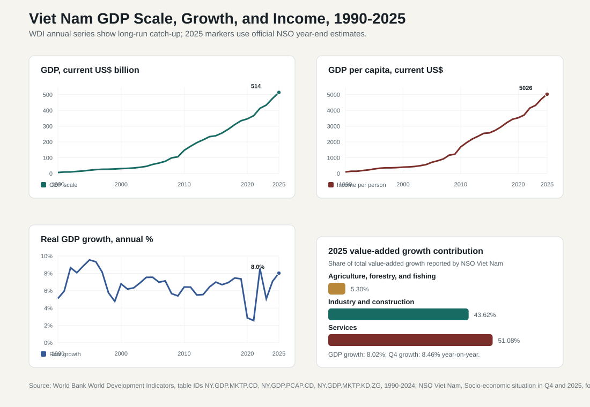
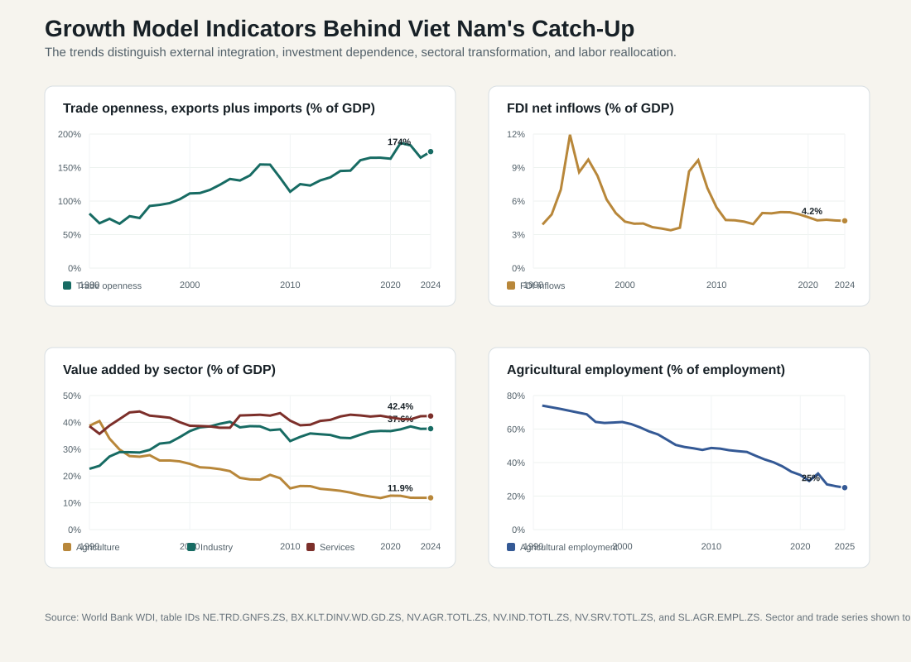

9.1 GDP Scale, Growth, and Income Level
ASEAN comparative lens (2026). Vietnam should be read in ASEAN comparison as ASEAN's most prominent party-led, export-manufacturing upgrading case. Unlike the Philippines' service-remittance profile, Thailand's older industrial-tourism base, Malaysia's resource-industrial federal structure, or Indonesia's archipelagic domestic-market scale, Vietnam's comparative issue is how a socialist party-state manages very open global production networks. For this section, the regional comparison should compare growth, inflation, exchange-rate exposure, productivity, and sectoral structure with ASEAN's manufacturing, services, tourism, resource, and corridor-based models. Local comparable indicators show: population 100.99 million (2024), rank 3 among the nine ASEAN reports in this workspace; GDP US$476.39 billion (2024), rank 4 among the nine ASEAN reports in this workspace; GDP per capita US$4,717 (2024), rank 5 among the nine ASEAN reports in this workspace; real GDP growth 7.09% (2024), rank 1 among the nine ASEAN reports in this workspace; government effectiveness 0.09 (2023), rank 6 among the nine ASEAN reports in this workspace; internet use 84.15% (2024), rank 4 among the nine ASEAN reports in this workspace. Use `sources/documents/regional/asean_comparative_lens_2026.md` together with ASEANstats, ASEAN Secretariat materials, and the country processed-indicator files before making cross-ASEAN claims.
Vietnam's macroeconomic performance should be read as a sequence of connected questions: how large the economy has become, how fast it is growing, whether rising output is translating into higher income per person, and whether the drivers of growth are becoming more productive and resilient. The headline story is impressive. World Bank WDI data show current-price GDP rising from about USD 6.5 billion in 1990 to USD 476.4 billion in 2024, while the National Statistics Office of Viet Nam estimated 2025 GDP at about USD 514 billion. GDP per capita rose from about USD 99 in 1990 to USD 4,717 in 2024 and about USD 5,026 in 2025. Real GDP growth was 7.1 percent in 2024 and an estimated 8.02 percent in 2025.
The analysis goes beyond the fact that Vietnam grows fast. The deeper question is why growth has been sustained, what indicators show about the quality of that growth, and where the model is becoming vulnerable. Vietnam's growth has been produced by market reforms after Doi Moi, labor reallocation out of agriculture, high investment, export manufacturing, FDI, trade agreements, macroeconomic stability, infrastructure expansion, and disciplined state direction. The same model also creates problems: imported-input dependence, uneven domestic supplier development, low value-added assembly in some sectors, pressure on credit and real estate markets, infrastructure and energy bottlenecks, aging, climate risk, and uneven regional income gains.

9.1.1 Economic Scale: From Small Reform Economy to Major Southeast Asian Production Platform
Vietnam's economic scale has changed the country's administrative and geopolitical position. In 1990, shortly after the early Doi Moi reforms, Vietnam was still a small low-income economy with limited industrial capacity, weak infrastructure, and heavy reliance on agriculture. By 2000, GDP had reached about USD 31.2 billion. By 2010, after deeper trade opening and before the full effects of electronics-led export manufacturing, GDP had reached about USD 147.2 billion. By 2024, it had reached about USD 476.4 billion, and official national estimates put the 2025 economy at about USD 514 billion.
This scale matters for governance. A USD 500-billion economy requires a different state apparatus from a small agrarian economy. Industrial zones, ports, highways, airports, power systems, banking regulation, capital markets, labor inspection, customs procedures, environmental standards, social insurance, and urban public services become central administrative functions. Macroeconomic management is therefore not a detached technical chapter; it is part of state capacity.
The growth of scale also changes Vietnam's international exposure. The country is now large enough to be relevant in electronics, textiles, footwear, furniture, machinery, seafood, agricultural processing, and regional logistics. But size does not equal autonomy. A large share of output is connected to foreign-invested firms, imported intermediate goods, export markets, and multinational supply chains. The state must therefore manage an economy that is bigger, more sophisticated, and more vulnerable to external shocks than the earlier domestic reform economy.
9.1.2 Real Growth: Fast Catch-Up with Clear Cycles
Real GDP growth shows both resilience and volatility. Average annual growth was about 7.4 percent in the 1990s, 6.6 percent in the 2000s, and 6.6 percent in the 2010s. The 2020-2024 average fell to about 5.2 percent because the pandemic years pulled down the series, but the rebound was strong: 8.5 percent in 2022, 5.1 percent in 2023, 7.1 percent in 2024, and 8.02 percent in 2025.
The 2025 pattern is especially useful because it shows the short-run engines of growth. NSO estimates show quarterly year-on-year growth accelerating from 7.05 percent in the first quarter to 8.16 percent in the second, 8.25 percent in the third, and 8.46 percent in the fourth. For the full year, agriculture, forestry, and fishing grew by 3.78 percent and contributed 5.30 percent of total value-added growth; industry and construction grew by 8.95 percent and contributed 43.62 percent; services grew by 8.62 percent and contributed 51.08 percent. Manufacturing was the central industrial driver, with NSO reporting 9.97 percent manufacturing growth in 2025.
This tells us three things. First, Vietnam is not growing only through factories. Services now carry a very large share of annual growth, reflecting retail, transport, tourism recovery, finance, telecommunications, logistics, and urban consumption. Second, industry remains decisive because manufacturing creates exports, jobs, supplier demand, electricity demand, and provincial fiscal incentives. Third, agriculture is no longer the main engine of GDP growth, but it remains politically and socially important because it anchors rural livelihoods, food security, land administration, and climate vulnerability.
9.1.3 Income per Person: Rapid Convergence, But Not Yet High-Income Development
GDP per capita is the bridge between national output and living standards. Vietnam's current-dollar GDP per capita rose from about USD 99 in 1990 to USD 404 in 2000, USD 1,683 in 2010, USD 4,717 in 2024, and an estimated USD 5,026 in 2025. The increase is large enough to transform household consumption, education demand, housing markets, mobility, digital connectivity, and expectations of public service quality.
The income trend also shows the next constraint. Vietnam has moved far beyond the low-income position of the early reform period, but it is still not near high-income levels. Rising GDP per capita can coexist with relatively low wages in assembly sectors, uneven regional income, informal employment, urban housing pressure, and limited social protection coverage. The issue, then, is whether income growth is broad, productivity-based, and institutionally supported.
As income rises, the fiscal and administrative burden also rises. Households and firms demand cleaner urban environments, predictable land regulation, better schools, reliable hospitals, safer food and drugs, stronger digital services, smoother customs, and more credible courts and dispute resolution. A successful lower-middle-income state cannot govern only by delivering growth; it must also deliver quality, predictability, and social mobility.
9.1.4 Demand-Side Drivers: Consumption, Investment, Exports, and Import Intensity
The expenditure side of GDP clarifies what powered the 2025 acceleration. NSO estimated final consumption growth at 7.95 percent, capital formation at 8.68 percent, exports of goods and services at 16.27 percent, and imports of goods and services at 17.12 percent. The combination is important. Consumption and investment show that domestic demand recovered, while export and import growth show the continued importance of global production networks.
High export growth is positive because it reflects international demand, competitive manufacturing, and the ability of firms in Vietnam to integrate into supply chains. But high import growth at nearly the same pace shows the import-intensive character of export manufacturing. Electronics, machinery, garments, footwear, and other export sectors often require imported components, fabrics, machinery, chemicals, and intermediate goods. This is not automatically a weakness; global value chains work through cross-border specialization. The problem appears when domestic firms capture too little of the value chain or when imported input dependence leaves Vietnam exposed to exchange-rate changes, tariff shocks, logistics disruption, and foreign supplier decisions.
Investment is another double-edged driver. Capital formation raises roads, factories, industrial parks, power networks, ports, urban housing, and public facilities. But investment-led growth can weaken if credit is misallocated, land values become speculative, infrastructure projects are delayed, or public investment produces low productivity returns. The quality of investment matters as much as the quantity.
9.1.5 External Integration and FDI: Powerful Engine, Incomplete Domestic Linkage

Vietnam's trade openness is one of the clearest indicators of its development model. Exports plus imports of goods and services were about 81 percent of GDP in 1990, 111 percent in 2000, 114 percent in 2010, 165 percent in 2019, 187 percent in 2021, and 174 percent in 2024. A trade-to-GDP ratio near this range means Vietnam is not a closed national development model with a small external sector. It is an externally embedded manufacturing and logistics economy.
FDI is the institutional partner of this openness. Net FDI inflows have often remained around 4-5 percent of GDP in recent years: about 4.82 percent in 2019, 4.56 percent in 2020, 4.27 percent in 2021, 4.33 percent in 2022, 4.26 percent in 2023, and 4.23 percent in 2024. The percentage is not spectacular every year, but its development effect is large because FDI brings factories, supplier standards, export contracts, management routines, technology, and links to global buyers.
The main problem is domestic embedding. If FDI firms import most inputs, conduct limited research and development locally, and use Vietnam mainly as an assembly base, then exports can rise faster than domestic value added. The policy goal is therefore less about attracting more FDI than about raising local supplier capability, strengthening standards compliance, deepening vocational and engineering skills, improving logistics, and creating conditions in which Vietnamese private firms can enter higher-value stages of production.
9.1.6 Sectoral Transformation: Agriculture Falls, Industry Rises, Services Become Central
Sectoral value-added shares show the structural transformation behind GDP growth. Agriculture, forestry, and fishing fell from about 38.7 percent of GDP in 1990 to 24.5 percent in 2000, 15.4 percent in 2010, and 11.9 percent in 2024. Industry rose from about 22.7 percent in 1990 to 36.7 percent in 2000 and 37.6 percent in 2024. Services remained large throughout, moving from about 38.6 percent in 1990 to 42.4 percent in 2024.
This is a classic catch-up pattern, but Vietnam's version has specific administrative features. Industrialization depends heavily on provincial industrial parks, land conversion, power supply, transport corridors, customs administration, environmental approvals, and investment licensing. Services depend increasingly on urban governance, finance, logistics, retail regulation, digital platforms, education, health, tourism, and professional services. Agriculture's GDP share has fallen, but agricultural land, water, rural employment, food security, and climate adaptation remain politically sensitive.
The labor data show why sectoral transformation matters for productivity. Agricultural employment fell from roughly 74 percent of employment in 1991 to 64 percent in 2000, 48.7 percent in 2010, 25.9 percent in 2024, and about 25.0 percent in 2025. Moving labor out of agriculture raises average productivity when workers enter higher-productivity manufacturing and services. But this source of growth has limits. Once the easy phase of labor reallocation is exhausted, Vietnam must rely more on skills, technology, firm productivity, innovation, and better institutions.
9.1.7 Labor Productivity and Human Capital: The Next Growth Frontier
NSO estimated economy-wide labor productivity in 2025 at VND 245.0 million per worker, equivalent to about USD 9,809, with real labor productivity growth of 6.83 percent. It also reported that the share of trained workers with degrees or certificates reached 29.2 percent, 0.8 percentage points higher than in 2024. These statistics point to the central transition in Vietnam's growth model: the country must move from adding labor and capital to raising output per worker.
The productivity agenda is broader than education alone. It includes vocational training, engineering capacity, management quality, digital adoption, logistics reliability, energy security, competition policy, intellectual property, public procurement, standards institutions, and data systems. It also includes the quality of the bureaucracy. Slow licensing, overlapping inspections, unclear land procedures, weak contract enforcement, or delayed public investment can reduce productivity even when factories and workers are available.
Vietnam's productivity problem is therefore partly a public administration problem. The state must make markets work better: faster infrastructure delivery, predictable regulation, credible dispute resolution, transparent land and construction procedures, cleaner public procurement, and stronger coordination between central ministries and provinces. These are not secondary governance details; they affect the macro growth path.
9.1.8 Why Growth Happened: The Main Causal Mechanisms
Vietnam's growth has several mutually reinforcing causes.
First, Doi Moi changed incentives. Household agriculture, price reform, enterprise autonomy, private business recognition, trade opening, and gradual financial reform moved Vietnam away from a rigid planned economy while preserving party-state direction. This created a hybrid model: markets allocate much production, but the state still shapes land, credit, infrastructure, SOEs, industrial policy, and strategic planning.
Second, Vietnam used labor abundance effectively. A young labor force, high basic education outcomes, rural-to-urban migration, and low initial wages helped the country attract labor-intensive manufacturing and later electronics assembly. This produced employment, exports, and urbanization.
Third, foreign investment and trade agreements connected Vietnam to external demand. WTO accession, ASEAN integration, CPTPP, EVFTA, RCEP, and other trade arrangements strengthened credibility and market access. Foreign firms brought production networks that domestic firms could not have built quickly on their own.
Fourth, the state provided a relatively stable macro and political environment. Investors valued policy continuity, labor discipline, infrastructure expansion, and provincial competition for investment. Vietnam did not become a laissez-faire economy; it became a state-steered market economy integrated into global production.
Fifth, public investment and infrastructure expanded the production frontier. Roads, ports, airports, power systems, industrial zones, urban infrastructure, and digital connectivity lowered transaction costs and helped firms scale. The next test is whether public investment can become faster, cleaner, and more selective.
9.1.9 Main Problems: What the Indicators Warn About
The same indicators that show success also reveal risk.
The first problem is external dependence. Trade openness near 174 percent of GDP in 2024 means global demand, tariffs, rules of origin, logistics costs, and multinational supply-chain decisions can quickly affect domestic output. IMF's 2025 Article IV assessment warned that Vietnam's export-led model faces greater uncertainty from global trade policy, population aging, tighter financial conditions, and climate change.
The second problem is shallow domestic value capture. FDI and exports can raise GDP while domestic firms remain weak suppliers. If Vietnamese firms stay in low-margin activities, the country may have high export volume but limited technological upgrading, modest wage growth, and dependence on foreign-invested firms for productivity.
The third problem is investment quality. Capital accumulation supports growth, but low-return infrastructure, land speculation, delayed project execution, and credit misallocation can weaken productivity. Vietnam's challenge is to turn public investment into logistics efficiency, energy reliability, climate resilience, and industrial upgrading rather than simply higher spending.
The fourth problem is the narrowing demographic dividend. Labor reallocation from agriculture has been a powerful source of growth, but the agricultural employment share has already fallen sharply. Population aging will make the next stage less forgiving: growth must come from productivity rather than additional workers alone.
The fifth problem is institutional complexity. Vietnam's economy has become more sophisticated than many administrative procedures designed for an earlier stage of development. Firms need predictable regulation, skilled local officials, consistent tax and customs interpretation, faster courts and arbitration, better data, and cleaner coordination between ministries and provinces.
The sixth problem is spatial inequality and environmental risk. Growth is concentrated in major urban-industrial corridors such as the Red River Delta, the Southeast, and coastal export zones, while rural, mountainous, central, and Mekong Delta areas face different constraints. Climate risk, especially in the Mekong Delta and coastal provinces, can damage agriculture, logistics, housing, and public investment.
9.1.10 Indicator-by-Indicator Interpretation
| Indicator | Main trend | Interpretation | Policy warning |
|---|---|---|---|
| GDP, current US$ | USD 6.5 billion in 1990; USD 476.4 billion in 2024; about USD 514 billion in 2025 | Vietnam has become a major Southeast Asian production and trade economy. | Larger scale requires stronger regulation, infrastructure, financial supervision, and administrative coordination. |
| Real GDP growth | Long-run growth around 6-7 percent, with 8.02 percent in 2025 | Catch-up remains strong after pandemic disruption. | Growth is sensitive to exports, credit, public investment quality, and global demand. |
| GDP per capita | USD 99 in 1990; USD 4,717 in 2024; about USD 5,026 in 2025 | Income convergence is substantial but still incomplete. | Rising expectations will stress public services, housing, social insurance, and administrative fairness. |
| Trade openness | About 174 percent of GDP in 2024 | Vietnam is deeply embedded in global value chains. | Tariff shocks, rules of origin, imported-input dependence, and logistics disruption can quickly transmit into domestic output. |
| FDI net inflows | Around 4.2 percent of GDP in 2024 | FDI remains a central production and export engine. | Domestic linkages and technology transfer are not automatic. |
| Agriculture share of GDP | 38.7 percent in 1990; 11.9 percent in 2024 | Structural transformation has reduced agriculture's GDP weight. | Rural livelihoods, land administration, water, and climate adaptation remain major governance issues. |
| Industry share of GDP | 22.7 percent in 1990; 37.6 percent in 2024 | Manufacturing and construction have become core growth sectors. | Energy, logistics, environmental regulation, and supplier upgrading are binding constraints. |
| Agricultural employment | About 74 percent in 1991; about 25 percent in 2025 | Labor reallocation has raised average productivity. | Future growth must rely more on skills, productivity, and innovation as reallocation gains slow. |
| Labor productivity | Real labor productivity up 6.83 percent in 2025 | Productivity is improving and must become the main growth driver. | Education quality, firm capability, management, digital adoption, and bureaucratic efficiency become decisive. |
9.1.11 Policy Implications
Vietnam's GDP scale, growth rate, and income level show a successful catch-up economy, but they also show why the next stage is harder. The country can no longer rely mainly on low wages, imported components, and rapid movement of workers out of agriculture. It must raise domestic value added, strengthen private firms, improve public investment quality, deepen capital markets, manage financial risk, expand high-quality skills, and make regulation more predictable.
The most important policy distinction is between growth speed and growth quality. Fast GDP growth can coexist with weak domestic linkages, low-margin assembly, uneven regional income, credit risk, environmental damage, and public investment delays. Higher-quality growth would mean that exports generate stronger domestic supplier networks, FDI creates more technology transfer, services become more productive, public investment lowers real business costs, and income growth is supported by stronger public services.
ADB's April 2026 Asian Development Outlook dataset projects Vietnam's growth to remain high but moderate to 7.2 percent in 2026 and 7.0 percent in 2027. That outlook fits the central diagnosis of this section: Vietnam's growth model is still powerful, but sustaining convergence requires a shift from factor mobilization toward productivity, innovation, domestic capability, and institutional quality.